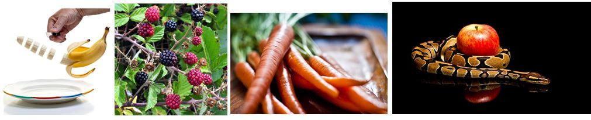

Model#
Table of Introduction in PR#
The main goal of learning is to summarize a large volume of data into a small set of parameters. For this purpose, several models are proposed. In general, the model can be linear or nonlinear.
Projection Models#
In this type, all data is projected onto a specific axis or axes. Mathematically, projection means the inner product:
where $\( \left( W=(w1,w2,⋯,wd)^{T} \right) \)$
\(g(x)\) is a linear or nonlinear function.
Why Projection?#
In this method, each data point, which is a d-dimensional vector, is transformed into a scalar number. Decision-making is done in one dimension instead of focusing on d dimensions. Many decisions have scalar outputs, such as how much a stock price will increase in percentage terms. Thus, instead of examining d input data points, the decision is made based on one number by projecting it onto a vector. However, determining the appropriate projection vector to make the correct decision is one of the main questions in pattern recognition.
The problem begins when a pattern is represented by a d-dimensional vector. In feature extraction, various aspects of the pattern are examined, and multiple features are extracted from each aspect. The combination of these features forms a vector. For example, predicting a stock price requires considering multiple aspects, such as a vector of stock growth over a recent period, which could be a 10-dimensional vector representing the stock’s growth over the past 60 trading days. This means sampling the stock’s growth every 6 days results in a 10-dimensional vector. Another vector might represent the company’s sales volume; profitability per share provides a 3-dimensional vector. Sentiments derived from social networks, including optimism about institutional performance, retail investor sentiment, political stability, and market calmness, form another 3-dimensional vector, resulting in a total 16-dimensional vector. Of course, there are many methods, and typically the feature vector is much larger.
For object recognition from its image using its histogram, we deal with a 256-dimensional feature vector on a grayscale image, making the feature vector essentially a pattern. The output, in this recent example, is a scalar number between 0 and 𝑁 − 1, where N is the number of pattern types. For instance, 𝑁 different targets such as apple, banana, carrot, and raspberry constitute 4 targets, described as scalar outputs 0, 1, 2, and 3, respectively. Thus, projection is an appropriate tool for converting the input vector to a scalar.

There are stationary and non-stationary projection parameters. This means that the projection may change due to conditions such as the passage of time, changes in location, and similar factors, causing the type of data and consequently the feature vector to change. Therefore, a projection that was previously effective or effective in another location may need to be changed. This concept is referred to as the non-stationarity of the projection axis. For example, the type of apple changes throughout the year, such as Gala apples, Lebanese apples, and so on. Additionally, apples vary in different locations, making the non-stationarity of the projection axis reasonable from a spatial perspective as well.